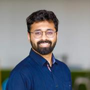
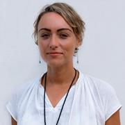
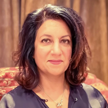

About the workshop
Trauma-informed care is gaining momentum across sectors that work with potentially vulnerable groups, including education, healthcare, social work, and criminal justice. In parallel, trauma-informed research and design have emerged as a growing area of interest in computing, with a marked increase in publications since 2020 addressing technology-mediated psychological trauma, technologies that support trauma survivors, and design with and for those communities.
This trend is visible across SIGACCESS, SIGCHI, and the wider ACM computing research landscape. Given the strong, bidirectional association between disability and psychological trauma, the need for shared trauma-informed practices is especially acute in accessibility research. This workshop brings together researchers, practitioners, and community members to examine what trauma-informed research looks like in our field, and to begin building shared resources and best practices.
A note on care. Discussions may touch on personal and professional experiences of trauma. The workshop is designed around grounding exercises, a collaboratively agreed code of conduct, quiet-room access, and on-site mental health first aid. Full details are in the participation and accessibility section.
Goals
The workshop aims to:
- Surface and synthesise existing practices and challenges around trauma-informed research in accessibility and HCI.
- Develop a shared vocabulary and set of principles for trauma-informed research in computing contexts.
- Identify concrete next steps for the community, including research agendas, design guidelines, and community resources.
Programme
| Time | Activity |
|---|---|
| 09:00–09:10 | Opening and introductions. Welcome, grounding exercise, and collaborative code of conduct. |
| 09:10–09:35 | Keynote and discussion. A recorded contribution from an invited speaker with direct experience in trauma-informed approaches, disability justice, or ethical research with marginalised communities, followed by open discussion in place of live questions. |
| 09:35–10:00 | Lightning talks. Five talks, up to five minutes each, from participants and organisers. |
| 10:00–10:30 | Activity 1 — Diverging. Surfacing existing experiences, challenges, and practices, working through role personas. |
| 10:30–10:50 | Coffee break. Facilitators cluster the Activity 1 output into themes for Activity 2. |
| 10:50–11:50 | Activity 2 — Converging. Working the themes from Activity 1 into concrete, actionable principles. |
| 11:50–12:20 | Closing reflections and next steps. Open space for reflections and remaining questions, and a conversation about the write-up and co-authorship. |
| 12:20 | Close. Optional group photo and highlights video as we move through (with consent). Followed by lunch. |
What to expect on the day
- You will be asked to present briefly. There are five lightning talks, with up to five minutes each. Slides are not required — talking from notes is entirely fine, and a co-author can present on your behalf if you would rather not. Let us know in advance if you would prefer to skip this.
- The code of conduct is built in the room. At the opening you will be invited to add up to three points to a shared Code of Conduct Wall. The facilitators combine these and share the result as the guide for the rest of the session.
- This is a small group. We will work as a single table rather than in breakout groups, using flipcharts, sticky notes, and digital collaboration tools. Each person takes one or two role personas — primary researcher, supervisor, ethics and data protection, safeguarding, participant, or parent and carer — to think from, so that perspectives nobody in the room holds directly still get represented.
- Read the other submissions beforehand if you can. Accepted submissions are circulated to registered participants before the workshop.
- Stepping out is expected. There is a 20-minute coffee break at 10:30, and you are welcome to leave and return at any other point without explanation.
- Lunch follows the close. The workshop ends at 12:20 and lunch is provided, so there is unstructured time afterwards to carry on conversations.
After the workshop
The organising team will synthesise the outputs from both activities into a structured document, including the draft principles and heuristics from Activity 2 annotated with supporting discussion points and examples raised in the session. This will be shared with all participants for review and feedback within four weeks of the workshop.
All workshop materials — slides, activity prompts, and synthesised outputs — will be published on this website. A short reflective video, produced with participants' consent, will also be shared. We will pursue a submission to ACM Transactions on Accessible Computing (TACCESS), co-authored with interested participants, summarising the key themes and outcomes.
Accepted submissions
Submissions are circulated to registered participants ahead of the workshop; those listed here are published with their authors' explicit consent.
-
Submission title
Position paper
Authors: you can still change your mind. If you would like your submission removed from this page, or listed by title only, email the lead organiser and we will act on it. No reason needed.
The original call for participation (closed 7 August 2026)
Kept here for reference. Submissions are closed and the form is no longer accepting entries.
We invited submissions from researchers, practitioners, designers, and community members working at the intersections of accessibility, computing, physical and mental health, disability and social justice, and related fields. We particularly welcomed contributions reflecting on personal or professional experience of conducting research with trauma-affected communities; methodological challenges and lessons learned; ethical dilemmas in research design, data collection, or dissemination; design approaches centring trauma-informed principles; and lived experience of being a research participant or community member in such studies.
Three submission formats were accepted:
- Position paper — up to 2 pages in ACM format, excluding references.
- Multimodal short story — narrative, image, or other format illustrating a lived experience of trauma as it relates to research participation or conduct, with a brief reflexive statement.
- Visual or creative submission — poster, diagram, or illustrated narrative with a one-page description.
All submissions complied with the SIGACCESS accessibility guidelines, and the organising team worked with authors to ensure accessibility before distribution. Submissions were reviewed by the organising committee for relevance and fit rather than through anonymous peer review. At least one author of each accepted submission attends the workshop in person.
Resources
A starting reading list on trauma-informed research and design, assembled for workshop participants. It is not exhaustive, and we will add the workshop's own outputs here afterwards.
Foundations of trauma-informed care
- Trauma-Informed Care in Behavioral Health Services — Center for Substance Abuse Treatment (US), 2014.
- SAMHSA's Concept of Trauma and Guidance for a Trauma-Informed Approach — Substance Abuse and Mental Health Services Administration, 2014.
- Post-traumatic stress disorder — World Health Organisation fact sheet.
Disability justice and critical frameworks
- Ten Principles of Disability Justice — Berne, Levins Morales, Langstaff & Sins Invalid, WSQ 46(1), 2018.
- Trauma-informed disability politics: interdisciplinary navigations and implications — Liasidou, Disability & Society 38(4), 2023.
Trauma-informed computing and HCI
- Trauma-Informed Computing: Towards Safer Technology Experiences for All — Chen et al., CHI 2022.
- Toward Trauma-Informed Research Practices with Youth in HCI: Caring for Participants and Research Assistants When Studying Sensitive Topics — Razi et al., CSCW 2024.
- Mitigating Trauma in Qualitative Research Infrastructure: Roles for Machine Assistance and Trauma-Informed Design — Tseng, Ristenpart & Dell, CSCW 2025.
- Trauma-Informed Social Media: Towards Solutions for Reducing and Healing Online Harm — Scott et al., CHI 2023.
- Learning How to Do Trauma-Informed Design with a Data Donation Platform for Online Dating Sexual Violence — Zheng et al., CHI 2024.
- Responsible Trauma Research: Designing Effective and Sustainable Virtual Reality Exposure Studies — Degenhard et al., CHI 2026.
Trauma in accessibility research specifically
- Considering Trauma in Accessible Design for Adults with Intellectual and Developmental Disabilities — Venkatasubramanian et al., Communications of the ACM 68(1), 2024.
- Designing Post-Trauma Self-Regulation Apps for People with Intellectual and Developmental Disabilities — Venkatasubramanian & Ranalli, ASSETS 2022.
- Disability associated with exposure to traumatic events: results from a cross-sectional community survey in South Sudan — Ayazi et al., BMC Public Health 13, 2013.
What the evidence says about participant distress
- Participant distress in psychiatric research: a systematic review — Jorm, Kelly & Morgan, Psychological Medicine 37(7), 2007.
- The Risks, Benefits, and Ethics of Trauma-Focused Research Participation — Legerski & Bunnell, Ethics & Behavior 20(6), 2010.
- Distress in Response to and Perceived Usefulness of Trauma Research Interviews — Carlson et al., Journal of Trauma & Dissociation 4, 2003.
Practical guidance
- SIGACCESS Guide to Writing Accessible Documents.
- Framework for Innovation — UK Design Council.
- Mental Health First Aid — MHFA England.
The full bibliography, including the literature on adverse childhood experiences and disability, is in the workshop proposal; email the organisers for a copy.
Participation and accessibility
Format and participation
We have chosen to run this workshop in person only. The activities depend on small-group work, shared physical artefacts, and the ability to read the room and respond to distress as it arises — none of which we can facilitate safely across a hybrid split. The ASSETS 2026 conference itself offers a virtual attendance option; that option does not extend to this workshop.
To make the work available beyond the room, all findings will be published openly and disseminated to community mailing lists, and a reflective highlights video will be shared on this website with participants' consent. If in-person attendance is a barrier for you and you would still like to contribute, please get in touch — we would rather find a way than lose the contribution.
Access requirements
Participants were asked to share access requirements on acceptance, through a short pre-workshop survey. We are working with the ASSETS conference accessibility team to provide a quiet desensitisation space, an accessible workshop format, and a wheelchair accessible room.
If something has changed, or you did not mention it earlier, it is not too late — email us and we will sort it out before the day, or on the day if that is when you tell us.
Well-being and safeguarding
The workshop is designed to reduce the risk of re-traumatisation and emotional dysregulation by including structured grounding exercises led by the workshop facilitators; a collaboratively developed code of conduct; and access throughout the conference to the quiet rooms and to an Emergency and Mental Health First Aider for private support.
This website
This page is built to meet WCAG 2.2 AA: semantic headings and landmarks, a skip link, full keyboard navigation with visible focus on both light and dark backgrounds, sufficient colour contrast, target sizes of at least 24 by 24 pixels, and reduced-motion support. Workshop information is provided as HTML text rather than as a PDF. If you encounter any barrier using this site, please let us know and we will fix it.
Organisers
The organising team brings more than 50 years of combined experience working with disability, marginalised, and minority communities across accessible computing, healthcare, disability and social justice, education, and mental health. All are based at University College London (UCL), United Kingdom.
Maryam Bandukda
Senior Research Fellow, Global Disability Innovation Hub, UCL
Xandra Miguel-Lorenzo
Anthropologist (PhD, LSE), UCL

Tigmanshu Bhatnagar
Lecturer & Research Fellow, Global Disability Innovation Hub, UCL

Victoria Austin
Pro Vice-Provost (Inequalities), UCL
Professor of Social Justice and Innovation, UCL
Catherine Holloway
Professor of Interaction Design, UCL Interaction Centre
Co-founder & Director, Global Disability Innovation Hub, UCL

Monica Lakhanpaul
Professor of Integrated Community Child Health, UCL Great Ormond Street Institute of Child Health